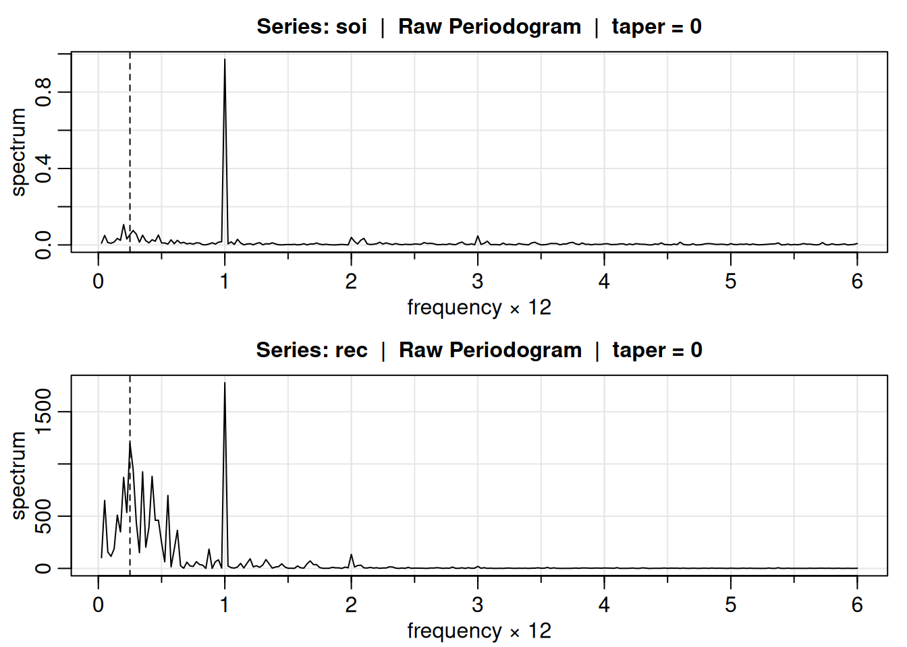
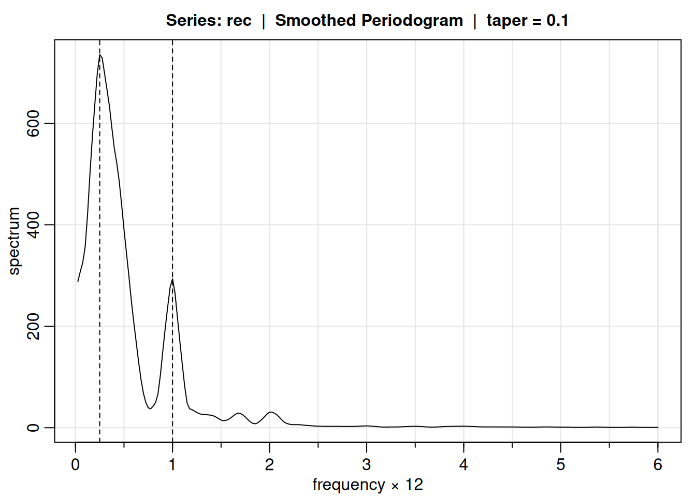
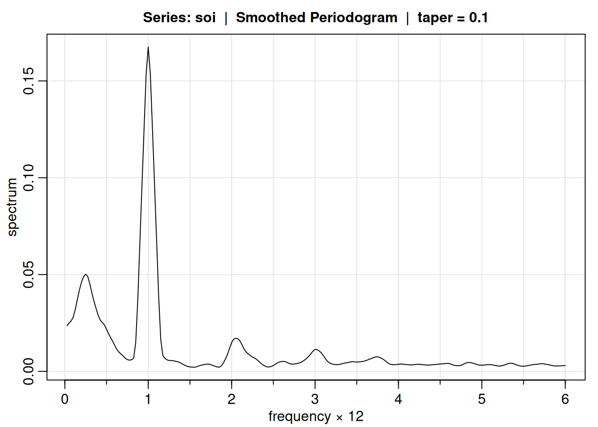
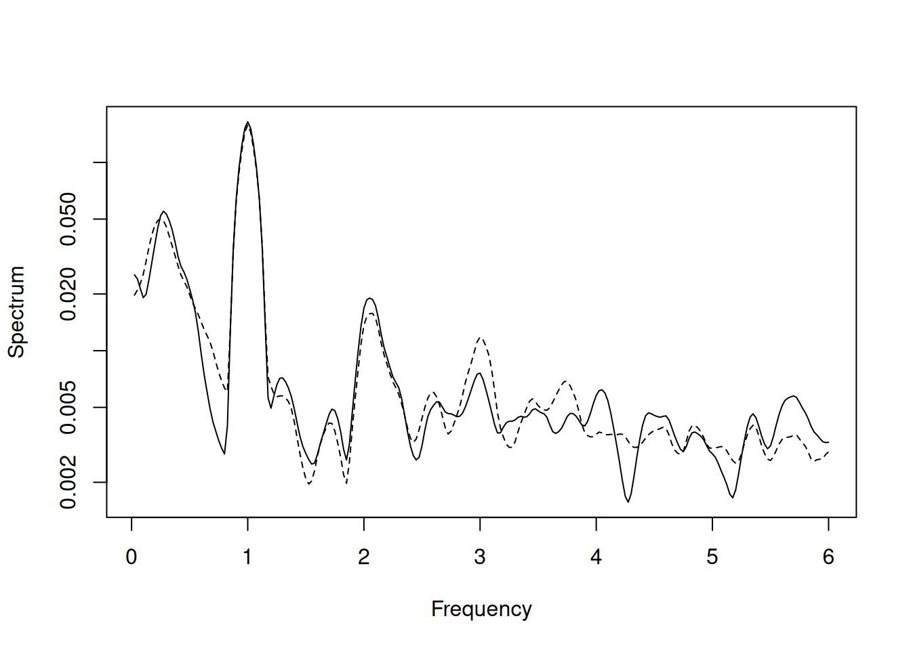

2.1 Decomposing a Non-Sinusoidal Cycle Using Regression
2.1.1 Introduction
This example demonstrates how to decompose a simple dataset into its frequency components using regression. The data given complete one cycle but not in a sinusoidal way, so the first frequency component \(\omega_1 = 1/5\) is expected to be large, while the second component \(\omega_2 = 2/5\) is expected to be small.
2.1.2 Data and Frequency Components
The dataset ( x = {1, 2, 3, 2, 1} ) is examined with the two frequency components. We use cosines and sines at the relevant frequencies to perform the decomposition.
# Define the datasetx =c(1, 2, 3, 2, 1)# Define cosine and sine terms for the first and second frequency componentsc1 =cos(2* pi *1:5*1/5)s1 =sin(2* pi *1:5*1/5)c2 =cos(2* pi *1:5*2/5)s2 =sin(2* pi *1:5*2/5)# Combine the components into matrices for regressionomega1 =cbind(c1, s1)omega2 =cbind(c2, s2)anova(lm(x~omega1+omega2))
Warning in anova.lm(lm(x ~ omega1 + omega2)): ANOVA F-tests on an essentially
perfect fit are unreliable
Analysis of Variance Table
Response: x
Df Sum Sq Mean Sq F value Pr(>F)
omega1 2 2.74164 1.37082 NaN NaN
omega2 2 0.05836 0.02918 NaN NaN
Residuals 0 0.00000 NaN
This analysis presents the periodograms of the SOI and Recruitment series. It explores the significance of certain periodicities, particularly the yearly cycle and a potential four-year El Niño cycle. Confidence intervals for these spectral peaks are also calculated, but the results show wide intervals, making it difficult to assert the significance of the four-year cycle. The periodograms for the SOI and Recruitment series show: - A narrow-band peak at the yearly cycle ( \(\omega = 1/12\) ). - A wide-band peak centered around the four-year cycle ( \(\omega = 1/48\) ), possibly linked to El Niño.
### R Code to Reproduce the Periodogram# Load the astsa packagelibrary(astsa)# Set up plotting parameterspar(mfrow=c(2,1))# Compute and plot the periodogram for the SOI seriessoi.per =mvspec(soi, log="no")abline(v=1/4, lty=2) # Add a vertical line at the four-year cycle# Compute and plot the periodogram for the Recruitment seriesrec.per =mvspec(rec, log="no")abline(v=1/4, lty=2)

Confidence Intervals for Spectral Estimates
We compute approximate 95% confidence intervals for the spectrum at the yearly cycle \(\omega=1/12\), and the possible four-year cycle \(\omega = 1/48\).
# Confidence interval boundariesU =qchisq(.025, 2) # 0.05063L =qchisq(.975, 2) # 7.37775# SOI periodogram values at specific frequenciessoi_per_1_12 = soi.per$spec[40] # SOI periodogram at freq 1/12 = 40/480soi_per_1_48 = soi.per$spec[10] # SOI periodogram at freq 1/48 = 10/480# Confidence intervals for the yearly cycleCI_1_12 =c(2* soi_per_1_12 / L, 2* soi_per_1_12 / U) CI_1_12 # Approximate 95% CI for the yearly cycle
[1] 0.2635573 38.4010800
# Confidence intervals for the four-year cycleCI_1_48 =c(2* soi_per_1_48 / L, 2* soi_per_1_48 / U) CI_1_48 # Approximate 95% CI for the four-year cycle
[1] 0.0145653 2.1222066
Interpretation
The periodogram at the yearly cycle \(\omega = 1/12\) is significant, with a 95% confidence interval that suggests its importance in the SOI series.
The wide confidence interval at \(\omega= 1/48\) (representing the four-year cycle) indicates that this peak may not be significant.
Conclusion
The periodogram analysis suggests the presence of a strong yearly cycle and a possible but irregular four-year cycle, which could be linked to El Niño. Further analysis is required to refine these findings.
2.2 Smoothing the Periodogram
This example shows the smoothed periodogram for the SOI and Recruitment series, using a Daniell kernel to average the periodograms computed earlier. The goal is to reduce noise in the spectrum while maintaining key features, particularly the El Niño frequency. The smoothed spectra help in identifying the predominant periods and their significance.
2.2.1 Averaged Periodogram Calculation
The Daniell kernel is used with ( L = 9 ) to compute the averaged periodograms. This provides a balance between noise reduction and retaining important peaks, as shown in the R code below.
# Compute and plot the averaged periodogram for SOIsoi.ave =mvspec(soi, kernel('daniell', 4), log='no')
# Display bandwidth of the SOI periodogramsoi.ave$bandwidth
[1] 0.225
# Bandwidth is 0.225, adjusted for the frequency scale in cycles per year# Compute and plot the averaged periodogram for Recruitment seriesrec.ave =mvspec(rec, kernel('daniell', 4), log='no')
We compute 95% confidence intervals for the SOI spectrum at key frequencies, such as the El Niño cycle (48 months) and the yearly cycle.
# Degrees of freedom for the averaged periodogramdf = soi.ave$dfdf # Returned value: 16.9875
[1] 16.9875
# Compute chi-squared limitsU =qchisq(.025, df) # Upper limitL =qchisq(.975, df) # Lower limit# Spectrum values at key frequenciessoi_spec_1_48 = soi.ave$spec[10] # Spectrum at frequency 1/48soi_spec_1_12 = soi.ave$spec[40] # Spectrum at frequency 1/12# Confidence intervals for the 48-month (El Niño) cycleCI_1_48 =c(df * soi_spec_1_48 / L, df * soi_spec_1_48 / U)CI_1_48 # Approximate 95% confidence interval for 1/48
[1] 0.02787891 0.11133335
# Confidence intervals for the yearly cycle (1/12)CI_1_12 =c(df * soi_spec_1_12 / L, df * soi_spec_1_12 / U)CI_1_12 # Approximate 95% confidence interval for 1/12
[1] 0.06703963 0.26772011
Interpretation
The smoothed spectra highlight the El Niño frequency and the yearly cycle more clearly:
At \(\omega=1/12\) (yearly cycle), the smoothing slightly flattens and spreads the peak. Harmonics of the yearly cycle appear at frequencies like \(\omega=1\Delta,2\Delta,\cdots\).
Confidence intervals suggest that the El Niño frequency (48 months) shows significant power, with lower limits exceeding baseline spectral levels, confirming its importance in the SOI and Recruitment series.
2.3 Introduction
This example shows how to estimate the spectra of the SOI and Recruitment series using a smoothed periodogram. A modified Daniell kernel with ( m = 3 ) is applied, and the periodogram is smoothed twice. The resulting estimates are considered more visually appealing than those in previous examples.
2.4 Smoothing the Periodogram with a Modified Daniell Kernel
We use the Daniell kernel, smoothed with ( m = 3 ), to estimate the spectra. The kernel coefficients are shown below.
# Define and plot the modified Daniell kernel with m = 3k =kernel("modified.daniell", c(3, 3))# Display the kernel coefficientsk$coef
# Display degrees of freedom and bandwidthdf_soi # Degrees of freedom: 17.42618
[1] 15.61029
bandwidth_soi # Bandwidth: 0.2308103
[1] 0.2308103
Estimating the Spectra for the Recruitment Series
We repeat the above steps for the Recruitment series.
# Calculate and plot the smoothed periodogram for the Recruitment seriesrec.smo =mvspec(rec, kernel=k, taper=.1, log="no")
Bandwidth: 0.231
Degrees of Freedom: 15.61
abline(v=c(.25, 1), lty=2) # Add vertical lines at key frequencies

# Retrieve degrees of freedom and bandwidthdf_rec = rec.smo$dfbandwidth_rec = rec.smo$bandwidth# Display degrees of freedom and bandwidthdf_rec # Degrees of freedom: same as SOI
[1] 15.61029
bandwidth_rec # Bandwidth: same as SOI
[1] 0.2308103
2.5 Smoothed Periodogram for SOI and Recruitment Series
2.5.1 Introduction
This example shows how to estimate the spectra of the SOI and Recruitment series using a smoothed periodogram with a modified Daniell kernel. The kernel is smoothed twice with ( m = 3 ), yielding ( \(L = 2m + 1 = 7\) ). The bandwidth and degrees of freedom are calculated, and a taper of 10% is applied to reduce leakage effects.
2.5.2 Defining the Modified Daniell Kernel
The modified Daniell kernel is created and its coefficients are displayed. This kernel is used to smooth the periodogram.
# Define and plot the modified Daniell kernel with m = 3k =kernel("modified.daniell", c(3, 3))# Display the kernel coefficientsk$coef
The smoothed periodogram for the SOI series is calculated, applying a 10% taper to reduce spectral leakage. The degrees of freedom and bandwidth are then retrieved.
# Calculate and plot the smoothed periodogram for the SOI seriessoi.smo =mvspec(soi, kernel=k, taper=.1, log="no")
Bandwidth: 0.231
Degrees of Freedom: 15.61
abline(v=c(.25, 1), lty=2) # Add vertical lines at key frequencies
# Retrieve degrees of freedom and bandwidthdf_soi = soi.smo$dfbandwidth_soi = soi.smo$bandwidth# Display degrees of freedom and bandwidthdf_soi # Degrees of freedom: 17.42618
[1] 15.61029
bandwidth_soi # Bandwidth: 0.2308103
[1] 0.2308103
2.5.4 Smoothed Spectral Estimate for Recruitment
We repeat the steps for the Recruitment series.
# Calculate and plot the smoothed periodogram for the Recruitment seriesrec.smo =mvspec(rec, kernel=k, taper=.1, log="no")
Bandwidth: 0.231
Degrees of Freedom: 15.61
abline(v=c(.25, 1), lty=2) # Add vertical lines at key frequencies
# Retrieve degrees of freedom and bandwidthdf_rec = rec.smo$dfbandwidth_rec = rec.smo$bandwidth# Display degrees of freedom and bandwidthdf_rec # Degrees of freedom: same as SOI
[1] 15.61029
bandwidth_rec # Bandwidth: same as SOI
[1] 0.2308103
2.5.5 Alternative Method for Estimation
An alternative way to generate the smoothed periodogram is by using the spans argument instead of explicitly defining the Daniell kernel. The spans vector specifies the smoothing parameter in terms of \(L=2m+1\), where \(m=3\).
# Alternative method using spans to define the smoothing parametersoi.smo_alt =mvspec(soi, taper=.1, spans=c(7, 7))
Bandwidth: 0.231
Degrees of Freedom: 15.61

2.6 The Effect of Tapering on the SOI Series
2.6.1 Introduction
In this example, we examine how tapering affects the spectral estimate of the SOI series. Tapering helps mitigate the effect of spectral leakage, which can blur periodic signals in the data. We compare the spectrum with no tapering against a spectrum with full tapering (50%). The fully tapered spectrum better distinguishes between the yearly cycle ($= 1 \() and the El Niño cycle (\) = 1/4 $).
2.6.2 Spectral Estimation with and without Tapering
We calculate the spectral estimate of the SOI series twice: once with no tapering and once with full tapering (50%).
# Calculate the spectrum with no taperings0 =mvspec(soi, spans=c(7, 7), plot=FALSE) # No taper# Calculate the spectrum with full tapering (50%)s50 =mvspec(soi, spans=c(7, 7), taper=.5, plot=FALSE) # Full taper
2.6.3 Plotting the Spectral Estimates
We now plot the spectral estimates on a log scale, using a solid line for the fully tapered spectrum and a dashed line for the non-tapered spectrum.
# Plot the fully tapered spectrum (solid line)plot(s50$freq, s50$spec, log="y", type="l", ylab="Spectrum", xlab="Frequency")# Add the non-tapered spectrum (dashed line)lines(s0$freq, s0$spec, lty=2) # Dashed line for no taper

2.6.4 Interpretation
From the plot, we observe that tapering (solid line) leads to better separation between the yearly cycle (\(\omega=1\)) and the El Niño cycle (\(\omega=1/4\)). The non-tapered spectrum (dashed line) shows more spectral leakage, blurring these two important periodic components. By applying a taper, we reduce this leakage and obtain a clearer picture of the underlying spectral features.